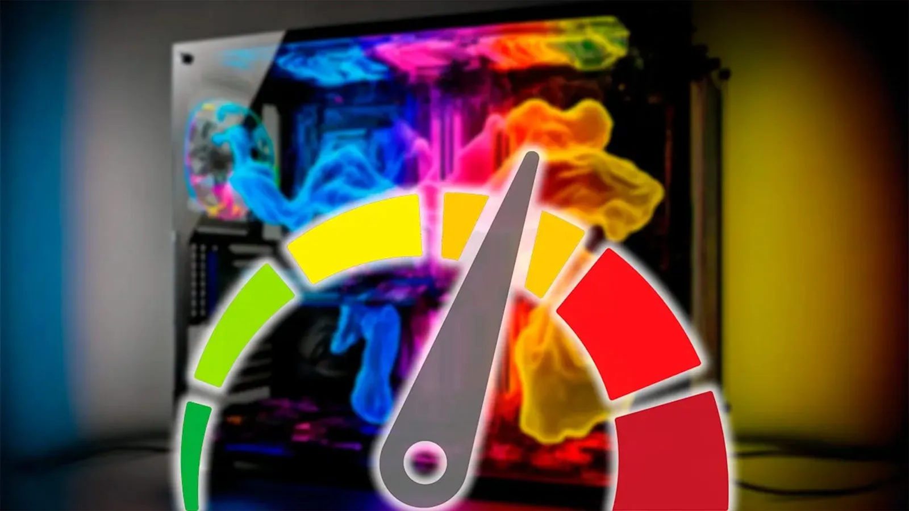
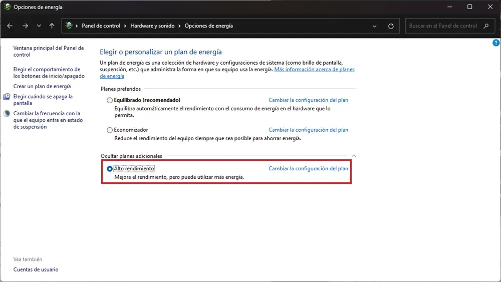
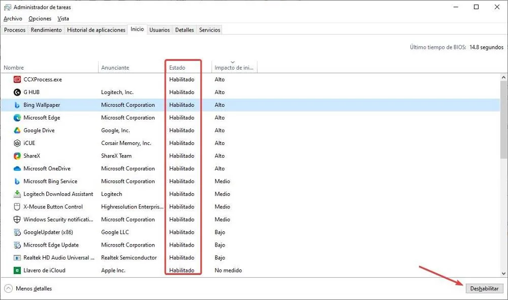

Cómo reducir el consumo energético de tu PC: 6 trucos que realmente funcionan

Si utilizamos el PC para trabajar o estudiar, lo más probable es que pase muchas horas encendido a lo largo del día con el consiguiente consumo de energía asociado. Dependiendo de la configuración de hardware y del sistema operativo, este puede tener un mayor o menor consumo de electricidad que repercute directamente en la factura de la luz y en el medio ambiente.
Si queremos ahorrar energía mientras utilizamos nuestro PC durante largas horas, podemos realizar una serie de ajustes en el equipo que redundarán en un menor consumo sin pérdida de rendimiento.
Plan de energía
Windows ofrece, de forma predeterminada 3 planes de energía: Economizador, Equilibrado y Alto rendimiento. Si queremos reducir el consumo de energía de nuestro PC sin que esto afecte al rendimiento, el plan que debemos elegir es Equilibrado. Este plan ajusta automáticamente la velocidad del procesador en base a las necesidades del equipo. El plan Alto rendimiento permite utilizar el procesador con su máxima rendimiento, elevando su consumo mientras que el plan Economizador reduce la velocidad del procesador, reduciendo el consumo y ralentizando el funcionamiento del equipo.

Tiempo de suspensión
Cada uno de los diferentes planes de energía, permite, además modificar el rendimiento del procesador, también permite establecer el tiempo que debe pasar hasta que el equipo entre en suspensión o reposo. Podemos modificar estos valores de forma que interfieran en nuestra forma de trabajar para evitar reducir el consumo de energía.
Apagado de la pantalla
Además, desde el mismo apartado que nos permite establecer cuando queremos que el equipo entre en suspensión, también podemos configurar el tiempo de inactividad del PC para que la pantalla se apague automáticamente.
Eliminar aplicaciones del inicio de Windows
¿De qué sirve abrir Spotify, Chrome, Steam, Slack y demás aplicaciones al iniciar Windows y luego no las vamos a utilizar? Sirven para incrementar el consumo de energía del equipo cada vez que lo iniciamos. Durante el inicio de Windows, se producen picos de consumo de energía que podemos evitar eliminando todas las aplicaciones de inicio de Windows que no utilizamos de forma habitual.

Cerrar aplicaciones en segundo plano
Mantener aplicaciones abiertas en segundo plano con el pretexto de «por si la utilizamos» para lo único que sirve es para que el procesador consuma más energía el verse obligado a mantener una aplicación abierta. Esto, además, también afecta al consumo de memoria, reduciendo su disponibilidad y obligando al equipo a utilizar la unidad de almacenamiento como memoria virtual, otro proceso que eleva el consumo de energía.
Hardware adecuado
Si utilizamos el PC para trabajar principalmente, montar un equipo con una gráfica dedicada para lo único que sirve es para aumentar el precio y el consumo de energía. Para realizar tareas de ofimática, navegar por internet, ver vídeos de YouTube y contestar correos electrónicos, no es necesario una tarjeta gráfica dedicada, ya que con la integrada en el procesador es más que suficiente.
Si el procesador que nos interesa utilizar carece de gráficos, por un poco más, podemos optar por el mismo modelo con chip gráfico. De esta forma, evitaremos comprar una gráfica a la que no vamos a darle ningún uso.